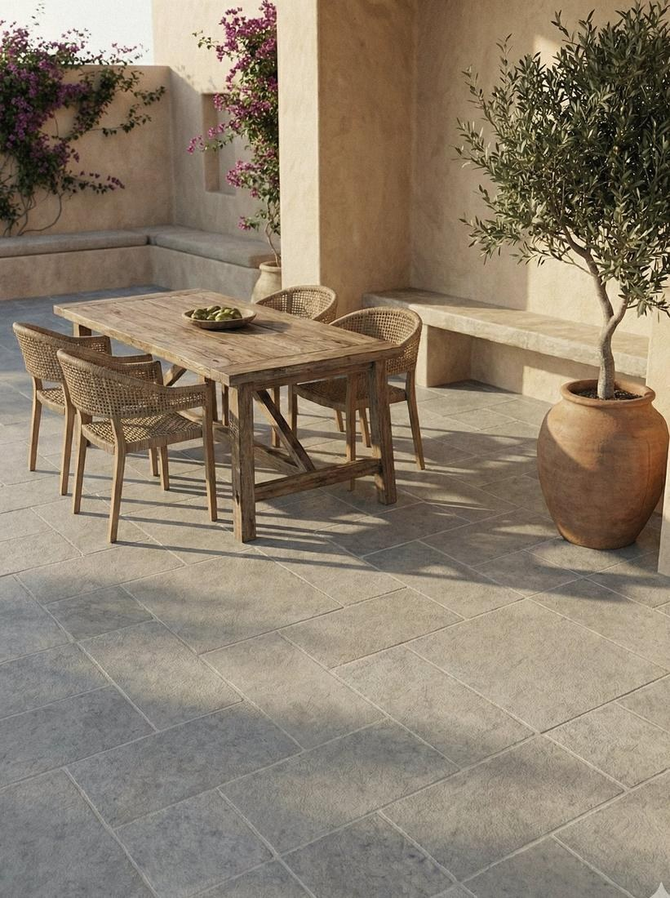
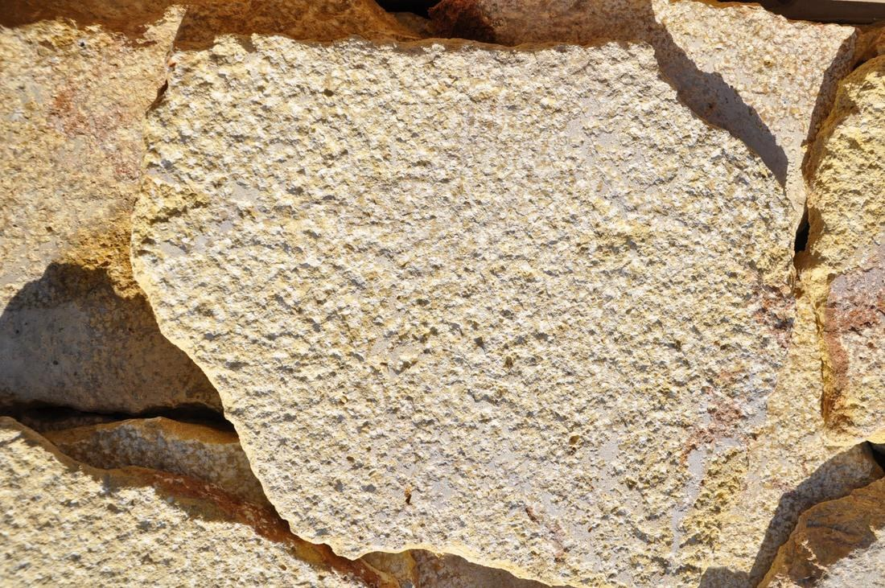
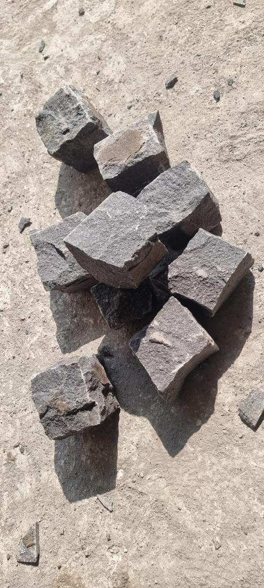

Απεικόνιση · Sinai Pearl, αμμοβολή
Εξωτερικοί χώροι · δάπεδα
Δάπεδα, ακανόνιστες πλάκες & κύβοι
Τα ανάγλυφα φινιρίσματα δίνουν στην πέτρα την πρόσφυσή της σε βεράντες, διαδρόμους οχημάτων και γύρω από πισίνες. Ο Sinai Pearl με αμμοβολή και ο βασάλτης μπουσαρδέ είναι οι δύο τυπικές πέτρες δαπέδου· ακανόνιστες πλάκες και κύβοι βασάλτη σχισμένοι στο χέρι συμπληρώνουν τη γκάμα για μονοπάτια, διαδρόμους και κράσπεδα.



Διάθεση
Sinai Pearl, αμμοβολή
Ανοιχτό χρώμα, δροσερό στο πάτημα, αντιολισθητικό · 40 × 60 · 60 × 60 · 60 × 80 cm, 2 cm
Βασάλτης, μπουσαρδέ
Πυκνό ανθρακί γκρι που κρύβει τη φθορά · 60 × 30 · 40 × 40 cm, 2 cm
Γρανίτης, φλογισμένος
Η πιο ανθεκτική επιλογή, για διαδρόμους οχημάτων και δημόσιους χώρους · πλακίδια στα μέτρα, από 2 cm
Ακανόνιστες πλάκες
Ακανόνιστη, μπουσαρδέ φυσική πέτρα για ελεύθερα δάπεδα και τοίχους · 3 cm, ή κατά παραγγελία
Κύβοι & κυβόλιθοι βασάλτη
Σχισμένοι στο χέρι, για διαδρόμους οχημάτων, μονοπάτια και κράσπεδα · κατά παραγγελία
Καλό να γνωρίζετε
Επιλέξτε το φινίρισμα πριν την πέτρα: στους εξωτερικούς χώρους η ανάγλυφη επιφάνεια μετρά περισσότερο από το χρώμα. Ανακατέψτε πλακίδια από πολλά κιβώτια ώστε η φυσική διακύμανση να απλωθεί ομοιόμορφα, και αφήστε αρμούς διαστολής σε μεγάλες επιφάνειες.
Τεχνικά στοιχεία
Περιβάλλον πισίνας
Sinai Pearl αμμοβολή ή βασάλτης μπουσαρδέ, με τροχισμένες ή στρογγυλεμένες ακμές
Διάδρομοι οχημάτων
Φλογισμένος γρανίτης ή κύβοι βασάλτη
Μονοπάτια
Ακανόνιστες πλάκες ή σκαλοπάτια κήπου, σε στρώση κονιάματος
Μορφές και φινιρίσματα στη σελίδα κάθε πέτρας.
Ακανόνιστες πλάκες σε κιβώτια
Εξωτερικοί χώροι & Δάπεδα